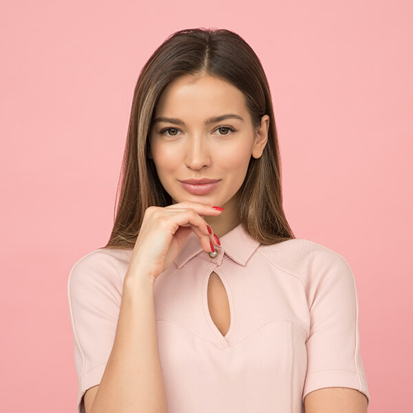

Sobre Mí
Perfil orientado al análisis de datos, automatización de procesos y desarrollo de soluciones tecnológicas para la gestión pública y proyectos web.

Analista de Datos, Matemática Aplicada & Desarrolladora Web
Matemática aplicada a la administración pública, con experiencia en automatización de pipelines de datos, análisis estadístico y desarrollo de dashboards para el monitoreo tributario y la toma de decisiones.
- Ciudad: Tegucigalpa, Honduras
- Email: galeanoterlyn@gmail.com
- Teléfono: 97717219
- LinkedIn: terlyngaleano
- Formación: Licenciatura en Matemáticas con Orientación en Estadística
- Rol actual: Analista de Estudios Fiscales y Económicos
- Institución: Servicio de Administración de Rentas (SAR)
- Especialidad: R, Python, PL/SQL, Power BI y automatización
Actualmente me desempeño en el Servicio de Administración de Rentas, donde diseño y gestiono pipelines reproducibles en R y Python, desarrollo procesos ETL en Oracle, construyo dashboards en Shiny y Power BI, y elaboro proyecciones e informes automatizados en LaTeX. Mi trabajo se enfoca en mejorar la trazabilidad, calidad y velocidad de procesamiento de la información tributaria.
Además, cuento con experiencia en desarrollo web freelance, creando y manteniendo sitios en WordPress y páginas personalizadas con HTML, CSS, JavaScript y PHP. Me interesa construir soluciones funcionales, claras y bien estructuradas, combinando análisis cuantitativo, automatización y diseño orientado a resultados.
Skills
Tecnologías, herramientas y competencias aplicadas al análisis de datos, automatización, visualización y desarrollo web.